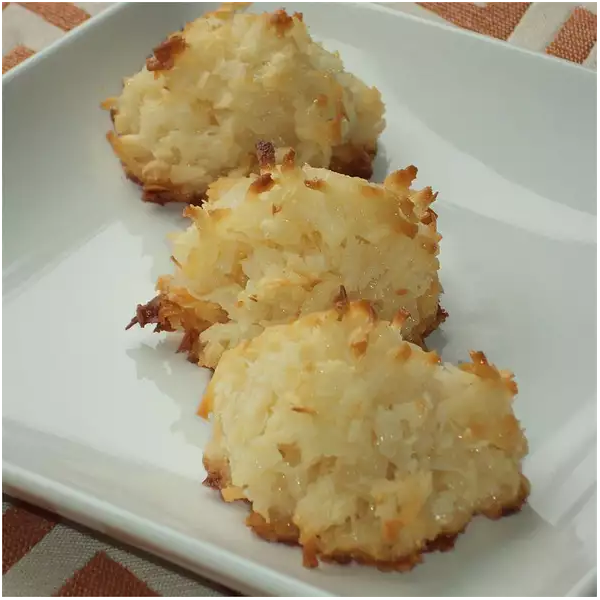

Divine Macaroons

Very easy to make and it only involves 4 ingredients
Ingredients:
- 5-3/4 cups of unsweetened shredded coconut
- 1 (14 ounce) can sweetened condensed milk
- 2-1/2 teaspoons vanilla extract
- 1-1/2 teaspoons almond extract
Steps:
- Place coconut in a bowl; add sweetened condensed milk, vanilla extract, and almond extract. Mix well. Refrigerate batter for 1 hour.
- Preheat oven to 300 degrees F(150 degrees C). Grease a large baking sheet.
- Loosely mold batter into 2-inch balls and arrange on the prepared baking sheet.
- Bake in the preheated oven until cookies are evenly golden, 10 to 15 minutes. Allow to cool on the baking sheet for 2 minutes before transferring to a sheet of waxed paper to cool completely.